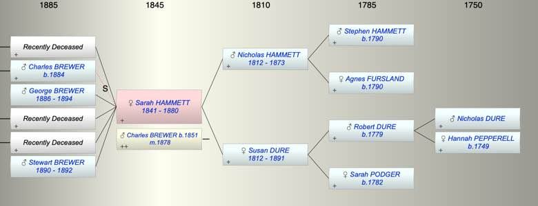

| [Index] |
| Sarah Agnes HAMMETT (1841 - 1880) |
|  |
| b. 1841 at Plymton |
| m. 21 Mar 1878 Charles BREWER (1851 - ) |
| d. 1880 aged 39 |
| Near Relatives of Sarah Agnes HAMMETT (1841 - 1880) | ||||||
| Relationship | Person | Born | Birth Place | Died | Death Place | Age |
| Grandfather | Stephen HAMMETT | abt 1790 | ||||
| Grandmother | Agnes FURSLAND | abt 1790 | ||||
| Grandfather | Robert Pepperell DURE | 1779 | Stokenham, Devon | |||
| Grandmother | Sarah PODGER | 1782 | Langport, Somerset | |||
| Father in Law | Charles BREWER | 18 Mar 1813 | Exminster | 1894 | 81 | |
| Mother in Law | Elizabeth WATTS | 1810 | 1848 | Starcross | 38 | |
| Father | Nicholas John HAMMETT | 1812 | Plymouth | 1873 | Plympton St Mary | 61 |
| Mother | Susan DURE | abt 1812 | 1891 | Plympton St Mary | 79 | |
| Self | Sarah Agnes HAMMETT | 1841 | Plymton | 1880 | 39 | |
| Husband | Charles BREWER | 1851 | Starcross | |||
| Daughter | Living or Recently Deceased | |||||
| Step Son | Charles Goodwin BREWER | 1884 | ||||
| Son | George Goodwin BREWER | 27 Jan 1886 | Teignmouth | 1894 | 8 | |
| Daughter | Living or Recently Deceased | |||||
| Daughter | Living or Recently Deceased | |||||
| Son | Stewart G BREWER | 05 Jul 1890 | Teignmouth | 1892 | 2 | |
| Brother | Robert H HAMMETT | 1838 | Stokenham | |||
| Brother | Stephen HAMMETT | 16 Jun 1845 | Plympton St Mary | 29 Apr 1915 | Plymouth | 69 |
| Son in Law | Henry PERRY | 1865 | Thurleston | 1923 | Plymouth | 58 |
| Son in Law | Living or Recently Deceased | |||||
| Son in Law | Warwick COX | 22 Sep 1888 | ||||
| Grandson | Cyril Robert PERRY | 16 Mar 1900 | Plymouth | 1934 | Plymouth | 34 |
| Grandson | Living or Recently Deceased | |||||
| Granddaughter | Living or Recently Deceased | |||||
| Grandson | Harold Edgar COX | 1919 | Teignmouth | |||
| Aunt | Agnes HAMMETT | 1814 | Plymouth | 07 Jun 1866 | Plymouth | 52 |
| Uncle | Thomas WHITE | 1812 | 18 Jan 1857 | Plymouth | 45 | |
| Aunt | Elizabeth HAMMETT | 1817 | Plymouth | |||
| Uncle | Robert DURE | 1816 | Langport | 16 Jun 1866 | Coleridge, Devon | 50 |
| Aunt | Elizabeth HARLEY | |||||
| Uncle | William DURE | 1816 | ||||
| Cousin | Thomas WHITE | 1843 | Plymouth | |||
| Cousin | Agnes P WHITE | 1848 | Stoke Damerel, Plymouth | |||
| Cousin | Eliz DURE | 1841 | South Pool, Devon | |||
| Cousin | Mary Grace Hurley DURE | 1843 | Stokenham | |||
| Cousin | John Harley DURE | 1845 | Stokenham | |||
| Niece | Susan Annie HAMMETT | 1871 | Plymouth | 1872 | Plymouth | 1 |
| Niece | Living or Recently Deceased | |||||
| Nephew | Charles Hooper BREWER | 1862 | 1941 | 79 | ||
| Nephew | William George BREWER | 1863 | ||||
| Nephew | Frank Hooper BREWER | 1865 | ||||
| Nephew | Samuel W BREWER | 1868 | ||||
| Nephew | Living or Recently Deceased | |||||
| Niece | Bessie Lilian ??? BREWER | 1877 | ||||
| Niece | Lilian BREWER | 1878 | ||||
| Nephew | WIlliam LOCKYER | 1858 | Teignmouth | |||
| Niece | Elizabeth LOCKYER | 1861 | Teignmouth | |||
| Nephew | George LOCKYER | 1865 | ||||
| Niece | Chalres LOCKYER | 1867 | ||||
| Niece | Harriett BREWER | 1870 | ||||
| Niece | Mary E T BREWER | 1871 | ||||
| Nephew | Living or Recently Deceased | |||||
| Brother in Law | Samulel Watts BREWER | 29 Oct 1837 | Exminster | 1915 | 78 | |
| Sister in Law | Patience BREWER | 1840 | Starcross | 1871 | 31 | |
| Sister in Law | Harriet Watts BREWER | 1842 | Starcross | Y | ||
| Brother in Law | George BREWER | 1843 | Starcross | 1875 | 32 | |
| Sister in Law | Mary Jane BREWER | 1845 | Starcross | 1845 | Starcross | 0 |
| Brother in Law | Albert BREWER | 1848 | Starcross | 1848 | Starcross | 0 |
| Sister in Law | Ruth BREWER | 10 Dec 1849 | Starcross | 31 Mar 1921 | Newton Abbott | 71 |
| Brother in Law | Daniel BREWER | 29 Mar 1853 | Teignmouth | |||
| Brother in Law | Solomon BREWER | 1855 | Teignmouth | |||
| Brother in Law | William Henry BREWER | 1857 | Teignmouth | |||
| Sister in Law | Bertha BREWER | 1859 | Teignmouth | 06 Apr 1899 | Teignmouth | 40 |
| Sister in Law | Blanche BREWER | 30 Jul 1860 | Teignmouth | 1916 | Australia | 56 |
| Sister in Law | Elizabeth Downing OLIVER | 1834 | Exeter | 1926 | Plymouth | 92 |
| Sister in Law | Catherine Julyan COOPER | 1837 | Falmouth | 05 May 1923 | Plymouth | 86 |
| Events in Sarah Agnes HAMMETT (1841 - 1880)'s life | |||||
| Date | Age | Event | Place | Notes | Src |
| 1841 | Sarah Agnes HAMMETT was born | Plymton | Note 1 | ||
| 1873 | 32 | Death of father Nicholas John HAMMETT (aged 61) | Plympton St Mary | Note 2 | |
| 21 Mar 1878 | 37 | Married Charles BREWER (aged 27) | |||
| 1880 | 39 | Sarah Agnes HAMMETT died | Note 3 | ||
| Personal Notes: |
|
was she Sarah Agnes Hemmett (sic) Registration District Plympton St Mary
Page 404 Volume 9 Affiliate Line Number 36 Registration Quarter Jul-Aug-Sep Registration Year 1841 |
| Created on a Mac™ using iFamily for Mac™ on 15 Sep 2023 |